Le foie, un organe impliqué dans l'homéostat glycémique
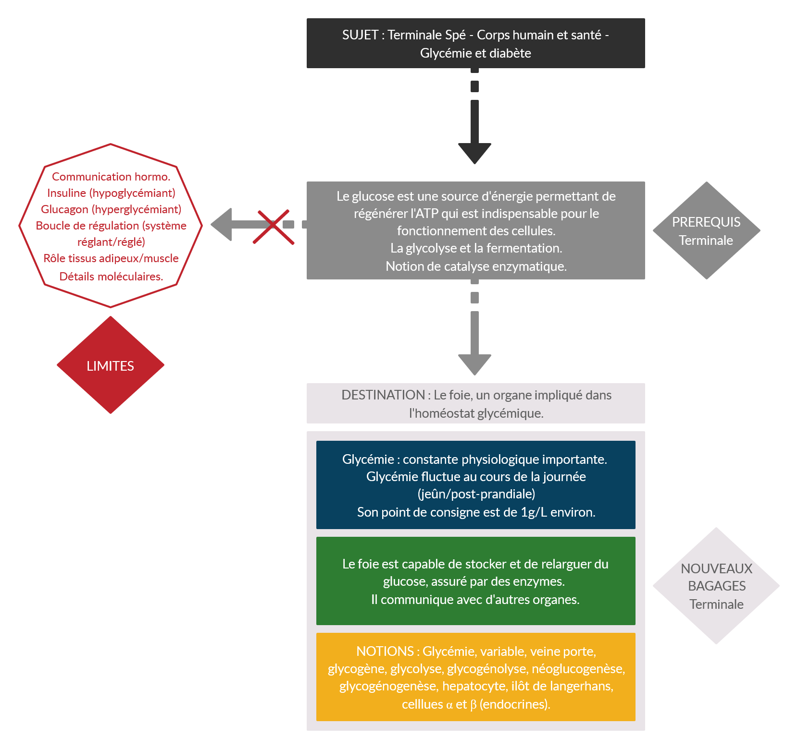
Introduction : De nos jours, la part de sucre dans notre alimentation est prépondérante et ne cesse d'augmenter. Notre organisme a besoin de s'adapter face à ces variations, qui fluctuent fortement au cours d'une journée.
Problématique : Qu’est ce que l’homéostat glycémique et comment le foie peut-il intervenir dans sa régulation ?
I. L'homéostasie glycémique
a. La glycémie
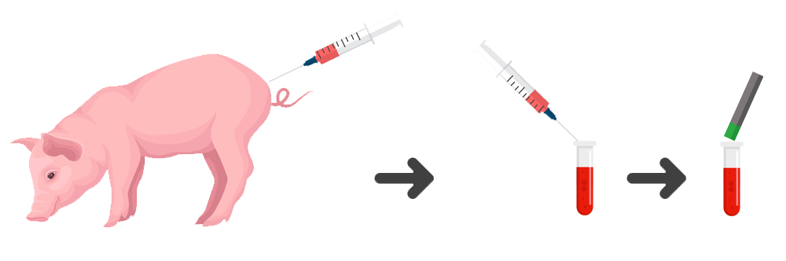
Utilisation d'un test glycémique sur le sang d'un cochon.
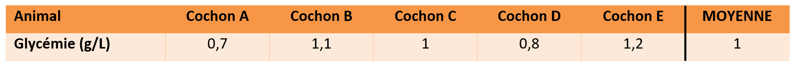
Chaque groupe effectue un test sur un échantillon différent, de manière à obtenir une glycémie moyenne.
Glycémie : Concentration en glucose sanguin, en moyenne à 1g/L (en dessous de 0,5g/L = hypoglycémie et au-dessus de 1,2 g/L = hyperglycémie).
b. Les variations de la glycémie et notion d’homéostat
Variation de la glycémie sur 3 jours.
×
Observation : Il y a des variations au cours de la journée, mais elles semblent régulées autour du point de consigne.
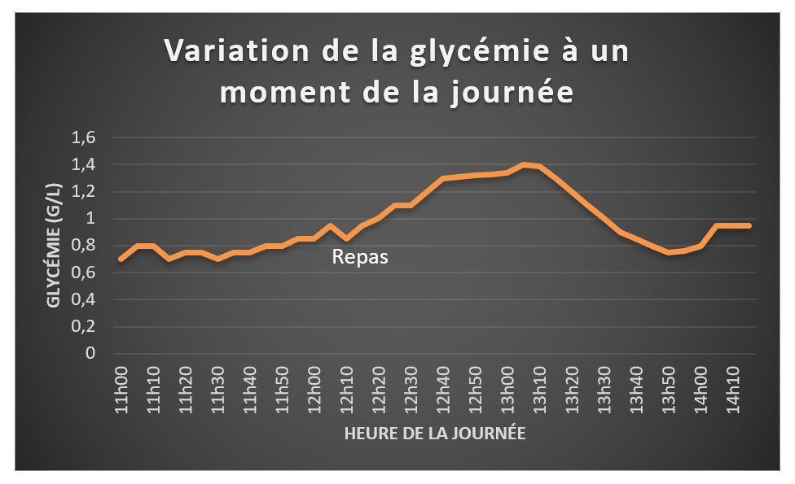
Variation de la glycémie à un moment de la journée.
×
Observation : Sur le graphe précedent, il semblerait que les variations soient minimes. Mais si on zoom sur un moment de la journée, la variation semble tout de suite plus importante.
II. Le foie, acteur de la régulation de l’homéostat glycémique
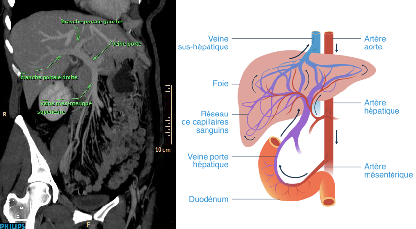
Angiographie par tomodensitométrie
a. Mécanisme post-prandiale: le stockage
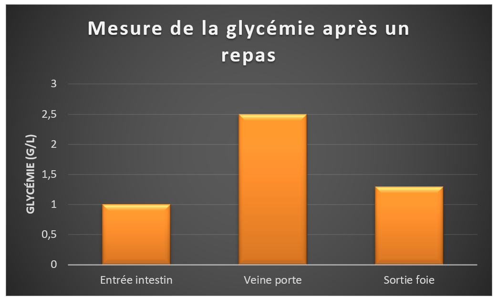
Les mesures glycémiques après repas permettent de comprendre qu'une partie des sucres reste dans le foie.
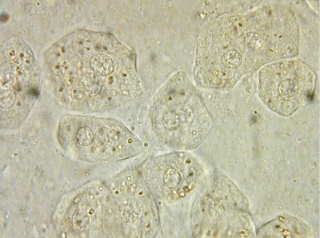
Grains de glycogène dans hepatocytes.
×
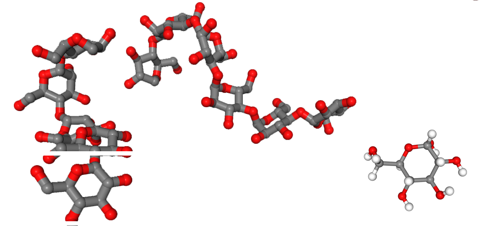
Structure moléculaire comparée d'une molécule de glucose et de glycogène.
b. Mécanisme à jeun : le relargage
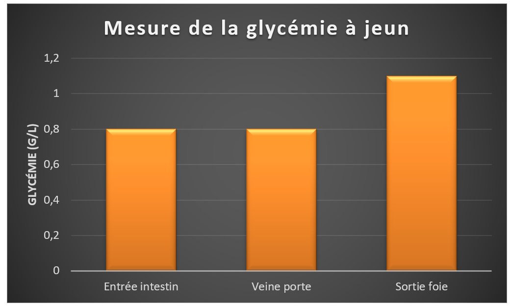
Après une période de jeun, la glycémie mesurée au niveau de l'intestin et de la veine porte est inférieure à la glycémie mesurée à la sortie du foie. Ce dernier est donc capable de relarguer du glucose dans le sang.
Expérience du foie lavé.
L'expérience permet de prouver que le foie est bel-et-bien capable de relarguer du glucose. Utiliser un muscle sert de témoin négatif, le muscle conserve le glucose pour sa propre utilisation.
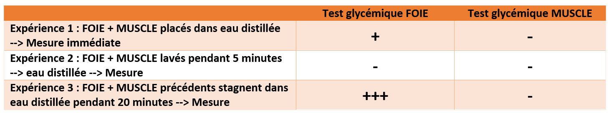
Tableau récapitulatif des expériences
III. Le foie en coopération avec d’autres organes
a. Mise en évidence du rôle du pancréas
Des expériences historiques permettent de révéler que le pancréas joue un rôle important dans la régulation de la glycémie.
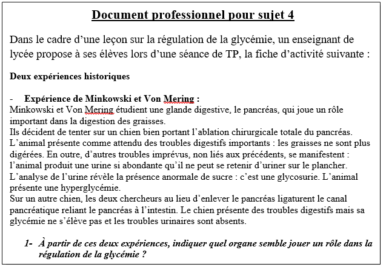
Document professionnel partie 1
×
Etude de la structure du pancréas.
L'etude immuno-histochimique du pancréas permet de retrouver plus facilement les structures sous le microscope.
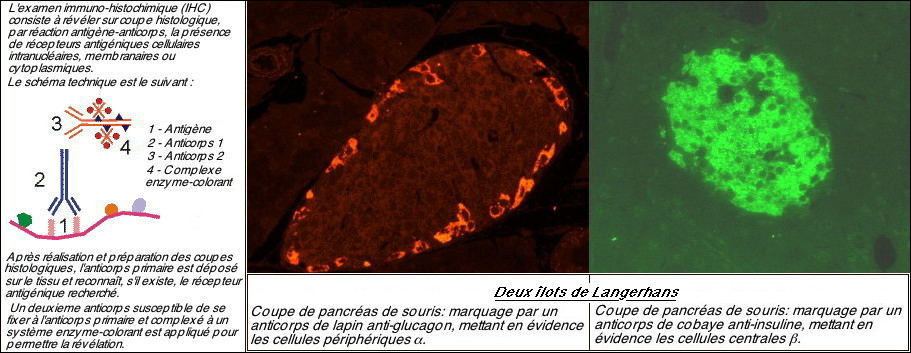
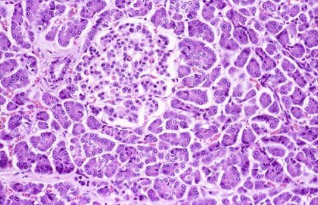
Attendu : réalisation d'un schéma d'interprétation de la coupe OU annotation d'une capture d'écran des îlots de Langerhans.
b. La relation entre le foie et le pancréas
Le pancréas n'étant pas relié au foie par un canal particulier (expérience de Von Mering) cela signifie que le dialogue entre les deux organes se fait par le sang.
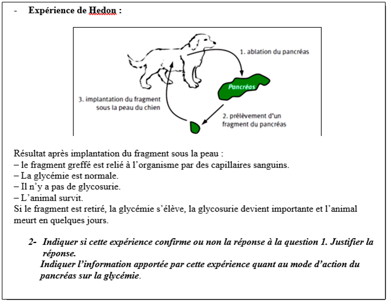
Document professionnel 2.
×
Conclusion : Schéma bilan
Ouverture : Quelles sont les molécules sécrétées par le pancréas et en quoi sont-elles impliquées dans les maladies comme le diabète ?